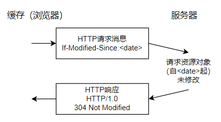
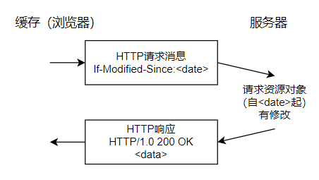
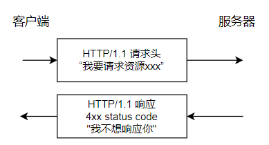
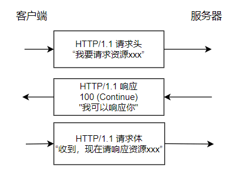

HTTP 1.0 VS HTTP 1.1

本文将从以下几个维度来对比 HTTP1.0 和 HTTP1.1:
- 响应状态码
- 缓存处理
- 连接方式
- Host 头处理
- 带宽优化
响应状态码
HTTP/1.0 仅定义了 16 种状态码。HTTP/1.1 中新加入了大量的状态码，光是错误响应码就新增了 24 种。比如说：
100（Continue）：在请求大资源前的预热请求。206（Partial Content）：范围请求的标识码。409（Conflict）：请求与当前资源的规定冲突。410（Gone）：资源已被永久转移，而且没有任何已知的转发地址。
缓存处理
缓存技术通过避免用户与源服务器的频繁交互，节约了大量的网络带宽，降低了用户接收信息的延迟。
HTTP/1.0
HTTP/1.0 提供的缓存机制非常简单。服务器端使用 Expires 标签来标志（时间）一个响应体，在 Expires 标志时间内的请求，都会获得该响应体缓存。服务器端在初次返回给客户端的响应体中，有一个 Last-Modified 标签，该标签标记了被请求资源在服务器的最后一次修改。在请求头中，使用 If-Modifiend-Since 标签，该标签标志一个时间，意为客户端向服务器进行问询：”该时间之前，我要请求的资源是否有被修改过？“通常情况下，请求头中的 If-Modifiend-Sine 的值即为上一次获得该资源时，响应体中的 Last-Modified 的值。
如果服务器即收到了请求头，并判断 If-Modifiend-Sine 时间后，资源确实没有被修改过，则返回给客户端一个 304 not modified 响应头，表示”缓存可用，你从浏览器里拿吧！“。
如果判断 If-Modifiend-Sine 时间后，资源被修改过，则返回给客户端一个 200 OK 的响应体，并附带全新的资源内容，表示”资源被修改过了，我给你一份新的“。


HTTP/1.1
HTTP/1.1 的缓存机制在 HTTP/1.0 的基础上，大大增加了灵活性和扩展性。基本工作原理和 HTTP/1.0 保存不变，而是增加了更多细致的特性。其中，请求头中最常见的特性就是 Cache-Control，详见 MDN Web 文档 Cache-Control
连接方式
HTTP/1.0 默认使用短链接，也就是说，客户端和服务器每进行一次 HTTP 操作，就建立一次连接，任务结束就中断连接。当客户端浏览器访问的某个 HTML 或者其他的类型的 Web 页中包含有其他 Web 资源（如 JavaScript 文件、图像文件、CSS 文件）等，每遇到这样的一个 Web 资源，浏览器就会重新建立一个 TCP 连接，这样就会导致有大量的“握手报文”和“挥手报文”占用了带宽。
为了解决 HTTP/1.0 存在的资源浪费问题，HTTP/1.1 优化为默认长连接模式。采用长连接模式的请求报文会通知服务端：“我会向你请求连接，并且连接成功建立后，请不要关闭”。因此，该 TCP 连接将持续打开，为后续的客户端服务端的数据交互服务。也就是说在使用长连接的情况下，当一个网页打开完成后，客户端和服务端之间用于传输 HTTP 数据的 TCP 连接不会关闭，客户端再次访问这个服务器时，会继续使用这一条已经建立的连接。
如果 TCP 连接一直保持的话也是对资源的浪费，因此，一些服务器软件还会支持超时时间的时间。在超时时间之内没有新的请求达到，TCP 连接才会被关闭。
有必要说明的是，HTTP/1.0 仍提供了长连接选项，在请求头中加入 Connection: Keep-alive。同样的，在HTTP/1.1中，如果不希望使用长连接选项，也可以在请求头中加入 Connection: close，这样会通知服务器端：“我不需要长连接，连接成功后即可关闭”。
HTTP 协议的长连接和短连接，实质上是 TCP 协议的长连接和短连接。
实现长连接需要客户端和服务端都支持长连接。
Host 头处理
域名系统（DNS）允许多个主机名绑定到同一个 IP 地址上，但是 HTTP/1.0 并没有考虑这个问题，假设我们有一个资源 URL 是 http://tang7o.cn/index.html, HTTP/1.0 的请求报文中，将会请求的是 GET /index.html HTTP/1.0 也就是不会加入主机名。这样的报文发送到服务器端，服务端理解不了客户端想请求的真正网址。
因此，HTTP/1.1 在请求头中加入了 Host 字段。加入 Host 字段的报文头部将会是：
1 | GET /index.html HTTP/1.1 |
这样，服务器就可以确定客户端想要请求的真正网址了。
带宽优化
范围请求
HTTP/1.1 引入了范围请求（range request）机制，以避免带宽的浪费。当客户端想请求一个文件的一部分，或者需要继续下载一个已经下载了部分但被终止的文件，HTTP/1.1 可以在请求中加入 Range 头部，以请求（并只能请求字节型数据）数据的一部分。服务器可以忽略 Range 头部，也可以返回若干 Range 响应。
如果一个响应包括部分数据的话，那么将带有 206（Partial Content）状态码。该状态码的意义在于避免了 HTTP/1.0 代理缓存错误的把该响应认为是一个完整的数据响应，从而把他当作一个请求的响应缓存。
在范围响应中，Content-Range 头部标志指示出了该数据块的偏移量和数据块长度。
状态码100
HTTP/1.0 中新加入了状态码 100。该状态码的使用场景为，存在某些较大的文件请求，服务器可能不愿意响应这种请求，此时状态码 100 可以作为指示请求是否被正常响应。


然而在 HTTP/1.0 中没有 100（Continue） 状态码，要想触发这一机制，可以发送一个 Expect 头部，其中包含一个 100-continue 的值。
压缩
许多格式的数据在传输时都会做压缩处理。数据的压缩可以大幅优化带宽的利用。然而，HTTP/1.0 对数据压缩的选项提供的不多，不支持压缩细节的选择，也无法区分端到端压缩或者是逐跳压缩。
HTTP/1.1 则对内容编码和传输编码做了区分，内容编码总是端到端的，传输编码总是逐跳的。
HTTP/1.0 包含了 Content-Encoding 头部，对消息进行端到端编码。HTTP/1.1 加入了 Transfer-Encoding 头部可以对消息进行逐跳传输编码。HTTP/1.1 还加入了 Accept-Encoding 头部，是客户端来指示它能处理什么样的内容编码。
总结
- 连接方式：HTTP/1.0 默认短链接，HTTP/1.1 默认长连接。
- 状态响应码：HTTP/1.1 中新家了大量的状态码，光是错误响应状态码就新增了 24 种。
- 缓存处理：在 HTTP/1.0 中主要使用 header 里面的
If-Modified-Since, Expires来作为缓存判断的标准，HTTP/1.1 则引入了更多的缓存控制策略，例如Entity tag, If-Unmodified-Since, If-Match, If-None-Match等更多可供选择的缓存头来控制缓存策略。 - 带宽优化及网络连接的使用： HTTP/1.0 中，存在一些浪费带宽的现象，例如客户端只是需要某个对象的一部分，而服务器却将整个对象送过来了，并且不支持断点续传功能，HTTP/1.1 则在请求头引入了 range 头域，它允许只请求资源的某个部分，即返回码是
206（Partial Content），这样就方便了开发者自由的选择以便于充分利用带宽和连接。 - Host 头处理：HTTP/1.1 在请求头中加入了
Host字段。